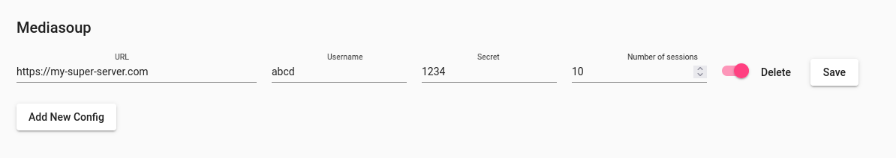

Debian/Ubuntu installation
External repository setup
HCW@Home relies on third party repositories as there is no recent version of mongo or nodejs into official repositories.
apt install curl gnupg ca-certificates lsb-release
# NodeJS Repository
NAME=nodejs
VERSION=16
KEY_URL="https://deb.nodesource.com/gpgkey/nodesource.gpg.key"
APT_URL="https://deb.nodesource.com/node_${VERSION}.x $(lsb_release -sc) main"
PACKAGE=nodejs
curl -fsSL ${KEY_URL} | gpg -o /etc/apt/trusted.gpg.d/${PACKAGE}.gpg --dearmor
echo "deb [signed-by=/etc/apt/trusted.gpg.d/${PACKAGE}.gpg] ${APT_URL}" > /etc/apt/sources.list.d/${NAME}.list
apt update
apt install ${PACKAGE}
# MongoDB Repository
NAME=mongodb
VERSION=6.0
DIST_NAME=$(lsb_release -si)
COMPONENT=$(if [ ${DIST_NAME} == "Ubuntu" ] ; then echo "multiverse" ; else echo "main" ; fi )
KEY_URL="https://www.mongodb.org/static/pgp/server-${VERSION}.asc"
APT_URL="http://repo.mongodb.org/apt/${DIST_NAME,} $(lsb_release -sc)/mongodb-org/${VERSION} ${COMPONENT}"
PACKAGE=mongodb-org
curl -fsSL ${KEY_URL} | gpg -o /etc/apt/trusted.gpg.d/${PACKAGE}.gpg --dearmor
echo "deb [signed-by=/etc/apt/trusted.gpg.d/${PACKAGE}.gpg] ${APT_URL}" > /etc/apt/sources.list.d/${NAME}.list
apt update
apt install ${PACKAGE}
systemctl enable --now mongod
After those commands are done, you should have up and running mongo service.
Install Redis
Redis is an on memory database, it's used to temporary store information like session. Installation of redis server must be shared between backends (if several one are deployed), but we are assuming here we are installing on one server. The installation is very simple:
apt install redis-server
Install antivirus
Antivirus limits the risk to propagate malware through HCW@Home. It will check any attachments give by patient or doctor during the consultation. Antivirus can be install on same server or on external server.
apt install clamav-daemon
Check that service is up.
systemctl start clamav-daemon
systemctl status clamav-daemon
Install coturn server
Coturn is an open-source project that provides a TURN and STUN server implementation. Both TURN and STUN are protocols that help in NAT traversal for WebRTC applications.
Coturn setup can be achieve in different mode, we assume that we are installing on same server than Backend, but it's strongly recommanded to install on different server.
apt install coturn
Now adjust the file /etc/turnserver.conf like this.
# Enable only if your server is behind a NAT.
external-ip=<you machine ip>
# Adjust only if you want to use another port.
listening-port=3478
# Ensure to enable fingerprint and long term credential.
fingerprint
lt-cred-mech
# Adjust the port range that turn is allowed to use. The port range must be opened from the
# firewall as UDP and TCP.
max-port=65535
min-port=49152
# Choose a realm, can be formatted like iabsis.com
realm=<domain>
# Configure a user and a password, this is required to be
# allowed to use the turn relay capabilities. <user>:<password>
user=myuser:mypass
If you don't want to put clear password in configuration file, you can encode the password with the following command.
turnadmin -k -u <user> -r <realm> -p <pass>
This command returns an encoded password starting by 0xabc..., replace mypass by the returned value, ensure to keep 0x in front of the password.
user=myuser:0xabc...
Keep in mind this user and password configured here as it will be used later by Mediasoup server.
Install HCW@Home repository and package
HCW@Home is composed of four main components:
- One Backend
- One Frontend dedicated for Doctors
- One Frontend dedicated for Patient
- One Frontend dedicated for Administrators
Those components can be installed on same server or on differents one. Here we will explain how to install on same server.
cat > /etc/apt/sources.list.d/hcw.list << EOF
deb [arch=amd64 trusted=yes] https://projects.iabsis.com/repository/hcw-backend/debian focal main
deb [arch=amd64 trusted=yes] https://projects.iabsis.com/repository/hcw-patient/debian focal main
deb [arch=amd64 trusted=yes] https://projects.iabsis.com/repository/hcw-doctor/debian focal main
deb [arch=amd64 trusted=yes] https://projects.iabsis.com/repository/hcw-admin/debian focal main
EOF
Now, refresh the list of packages with the following command.
apt update
Finally, you can install the thre component on one command
apt install hcw-athome-patient hcw-athome-backend hcw-athome-caregiver hcw-athome-admin
Install and configure web server
Now you have an up and running HCW@Home system, you must install a web server. We tested Nginx web server even if it should work with others like Apache.
Installation of Nginx is straight forward
apt install nginx
If you don't have reverse proxy server in front of your Nginx, you might need to install certbot for issuing SSL certificates. You can install the following package
apt install python3-certbot-nginx
By default, HCW@Home doesn't install Nginx configuration, but you can use the ready configuration from doc folder. Don't forget to adjust the configuration based on your needs.
wget https://raw.githubusercontent.com/HCW-home/frontend-patient/master/nginx-docker.conf.template -O /etc/nginx/sites-enabled/hcw-patient.conf
wget https://raw.githubusercontent.com/HCW-home/frontend-patient/master/nginx-docker.conf.template -O /etc/nginx/sites-enabled/hcw-doctor.conf
wget https://raw.githubusercontent.com/HCW-home/frontend-patient/master/nginx-docker.conf.template -O /etc/nginx/sites-enabled/hcw-admin.conf
rm /etc/nginx/sites-enabled/default
Update the files :
listen 80;
server_name <replace by your domain>;
root /usr/share/hcw-athome/admin; # or patient or caregiver for depending of config file you are updating;
...
proxy_pass http://127.0.0.1:1337; # Update 127.0.0.1 if installed on same server, or different IP if separate sever.
The last command removes the fallback default configuration provided by Nginx.
If you now want to issue certificate, run the following command and follow the usual cerbot process. If you need more information about this process, read the official documentation: https://certbot.eff.org/
certbot --nginx
Configure HCW@Home
Now that every component are ready, we can update the main configuration file /etc/hcw-athome/hcw-athome.conf. Most of the part are self explanatory, you are free to adjust according to your specific configuration.
Also adjust the socket or port Clamav can be reached. If you use socket, you might need to first add HCW@Home system user to Clamav group to be able to communicate with the Daemon.
adduser hcwhome clamav
Check now the socket path, by default it should be /var/run/clamav/clamd.ctl, so you can adjust this path in HCW@home configuration with this command.
sed -i 's|/var/run/clamd.scan/clamd.sock|/var/run/clamav/clamd.ctl|g' /etc/hcw-athome/hcw-athome.conf
Once updated, you can restart and check for logs with the following commands.
systemctl enable --now hcw-athome
or
systemctl restart hcw-athome
Check logs
journalctl -f -u hcw-athome -n 200
If you see the following line, it means your server is ready.
Aug 23 13:15:33 hcw-athome-dev node[546330]: debug: -------------------------------------------------------
Aug 23 13:15:33 hcw-athome-dev node[546330]: debug: :: Wed Aug 23 2023 13:15:33 GMT+0000 (Coordinated Universal Time)
Aug 23 13:15:33 hcw-athome-dev node[546330]: debug: Environment : production
Aug 23 13:15:33 hcw-athome-dev node[546330]: debug: Port : 1337
Aug 23 13:15:33 hcw-athome-dev node[546330]: debug: -------------------------------------------------------
Create first admin account
You must have a least one admin account before being able to login on the admin interface (then being able to create other user). Create the first user with mongo request.
mongosh
use hcw-athome;
db.user.insertOne({email:"admin@example.com", firstName:"Admin", lastName:"", role: "admin", createdAt: new Date().getTime(), password: "$2b$10$uip0TKwn.kbO1s1C3jO0au4ymxjkgd.kg9ueH2oV02I4gJBKzH.2m", "updatedAt": new Date().getTime(), "username" : "admin@example.com", phoneNumber: ""})
This command will create user with login "admin@example.com" and password "admin".
If you need to customize this passsword and you have nodejs installed (or you do on your server), you can use the following script, by example into password.js, don't forgot to update 'not hashed password'.
const bcrypt = require('bcrypt');
bcrypt.hash('not hashed password', 10, function(err, hash) {
if(err) console.log(err)
console.log(hash);
});
You will need to install bcrypt with the following command.
npm install bcrypt
Then run the script with:
node password.js
Install Media server with Mediasoup
Mediasoup is a media server used to send flow between participant.
cat > /etc/apt/sources.list.d/mediasoup.list << EOF
deb [trusted=yes] https://projects.iabsis.com/repository/mediasoup-api/debian bullseye main
EOF
Refresh the list of available package.
apt update
Now install the package
apt install mediasoup-api
Now adjust the file /etc/mediasoup-api/mediasoup-api.conf, don't forgot to define the following lines with your coturn configuration previously defined.
TURN_SERVER1=turn:turn.example.com/?transport=udp
TURN_USERNAME1=myuser
TURN_PASSWORD1=mypwd
Most values are self explanatory, once you done your changes, restart the service with the following command.
systemctl status mediasoup-api
If you prefer want to serve Mediasoup API with Nginx (recommanded), you can create a new Nginx file (by example /etc/nginx/sites-enabled/mediasoup.conf) and use the following template.
map $http_upgrade $connection_upgrade {
default upgrade;
'' close;
}
server {
server_name <domain>;
location / {
proxy_set_header Host $host;
proxy_pass https://localhost:3443;
proxy_set_header X-Forwarded-For $remote_addr;
proxy_http_version 1.1;
proxy_set_header Upgrade $http_upgrade;
proxy_set_header Connection $connection_upgrade;
proxy_set_header X-Forwarded-Proto $scheme;
proxy_set_header X-Forwarded-Port $server_port;
proxy_connect_timeout 120m;
proxy_send_timeout 120m;
proxy_read_timeout 120m;
}
listen 80;
}
Don't forget to update the
certbot --nginx
Mediasoup declaration in HCW@Home
If you have only one mediasoup server, you can simply configure it into HCW@Home configuration file.
#/etc/hcw-athome/hcw-athome.conf
MEDIASOUP_URL=https://<replace-by-my-domain>
MEDIASOUP_USER=abcd
MEDIASOUP_SECRET=1234
If you have more than one server, you can add all from admin interface from "Mediasoup" menu.
